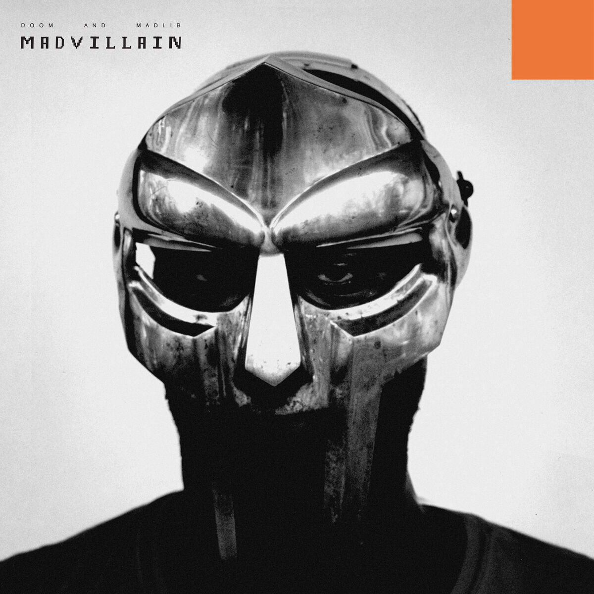
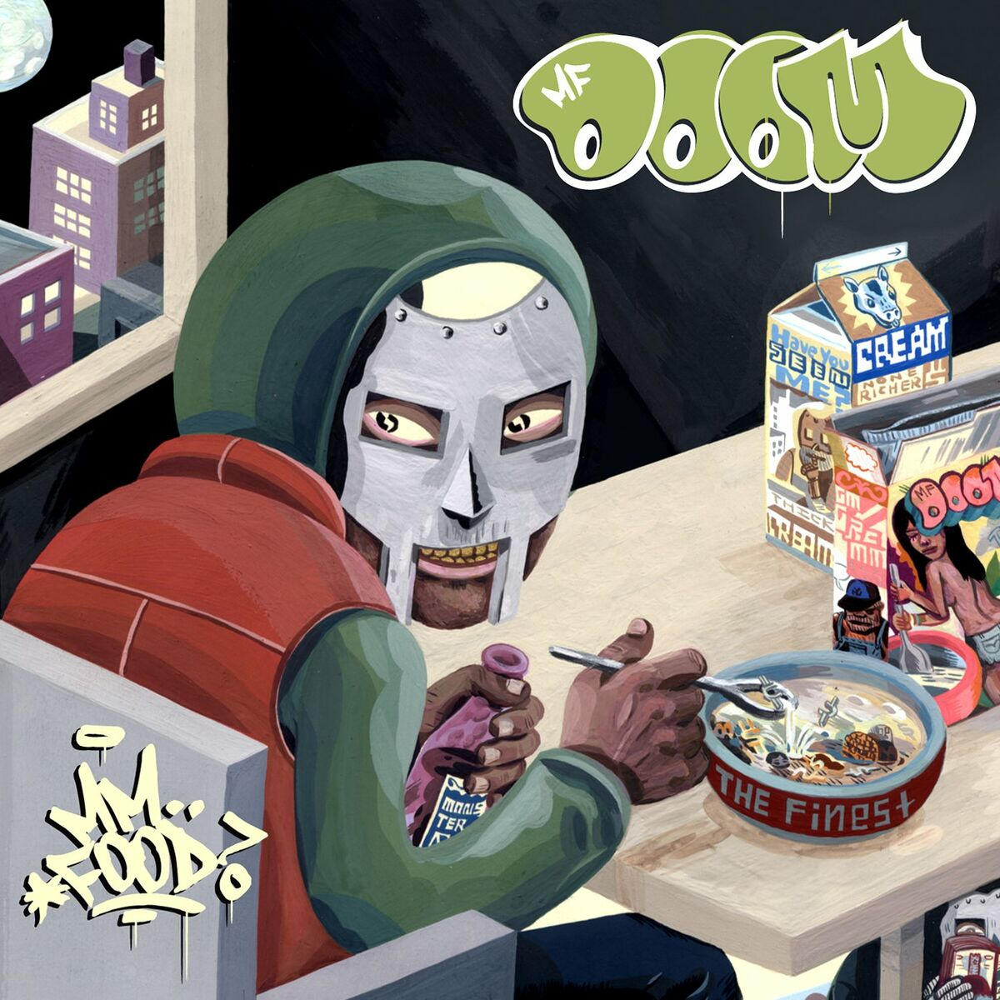
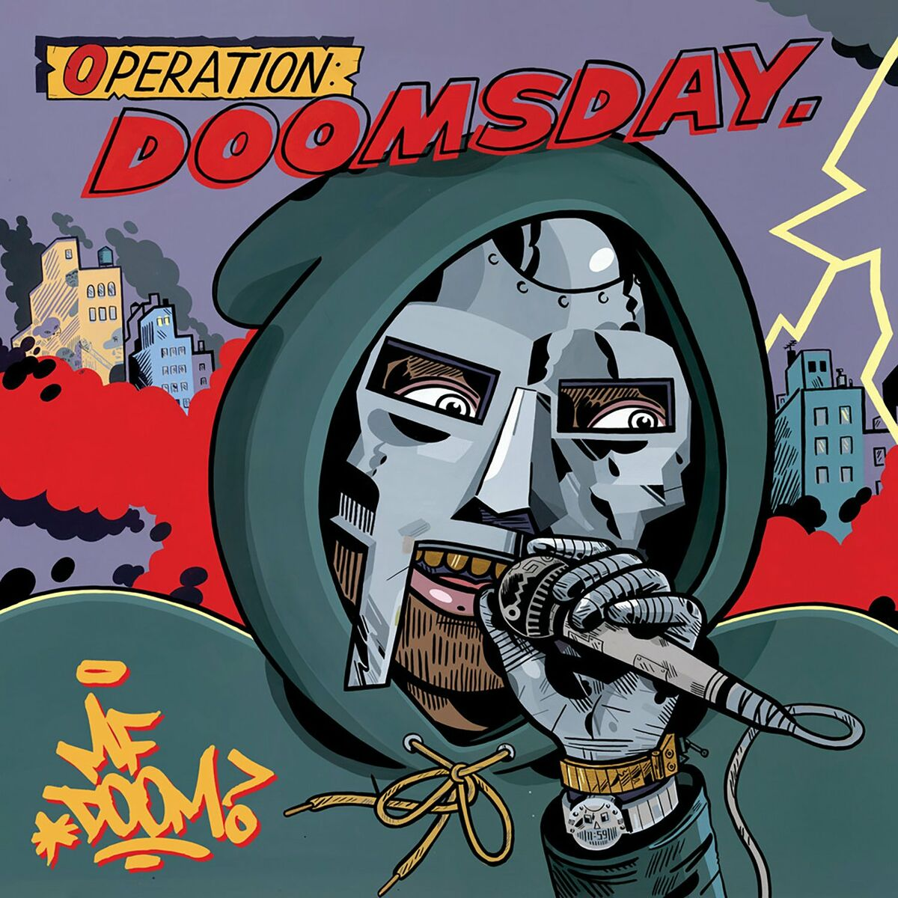

Daniel Dumile est né à Londres, le 9 janvier 1971. Il est ensuite parti aux États-Unis avec sa famille dès son plus jeune âge et a vécu entre New York et Long Island principalement. Toujours résidant états-unien depuis cette époque, il n’a pourtant jamais obtenu la nationalité américaine. Finalement, le rappeur américain préféré de ton rappeur américain préféré, il est totalement British.
Daniel est un grand fan de comics, c’est un des premiers geeks du rap. Lors de sa renaissance à la fin des années 1990 avec son classique Operation: Doomsday (1999), il prend l’identité d’un de ses personnages préférés chez Marvel : Fatalis (Dr. Doom en VO). Le célèbre docteur s’est grimé d’un masque de métal après avoir été défiguré suite à une expérience ratée. MF DOOM va faire comme lui, on ne verra plus jamais son visage.
|  | Madvillainy (Madvillain) 2004 |
|  | Mmh... Food 2004 - 2007 |
|  | Operation Doomsday 1999 |